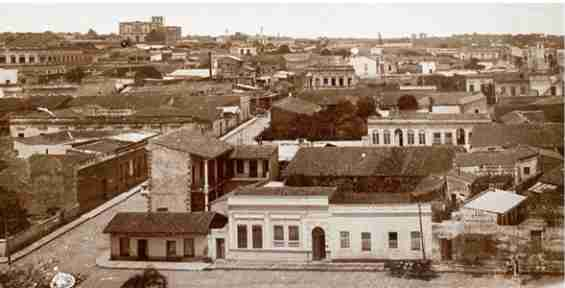

The buildings that make up the Manzana de la Rivera combine colonial, eclectic, neoclassical architecture, all present in Paraguayan constructions. This is how you can see La Casa Viola (18th century), Casa Clari, (20th century), Casa Clari Mestre (20th century), Casa Castelví (19th century), Casa Vertúa (19th century), Casa EMASA (20th century), Casa Serra 1 and 2 (19th century), Casa Ballario (20th century).
On the occasion of the 500th anniversary of the discovery of America, the Municipality of Asunción acquired the properties that make up the Mancha de la Rivera estate. In this way, the V Centenary Commission was formed, which included "La casa Viola" as one of the main projects to be carried out. Restoration work began in 1991. At the end of the work, the city's Cultural Center was formed.
The conformation of the layout of Asunción, presented an atypical characteristic in the continent, based on a certain degree of medieval "organicity", even when its scheme was dispersed, not organizational. Two elements conditioned this location morphology of the capital city such as: sandy soil subject to flooding, heavy rains with torrents. Also, the fire that occurred in 1543 motivated the rebuilding of the city by adopting an open frame system, which would prevent the spread of fire between the houses.
In the year 1760, Félix de Azara, points out that the houses have no height.
The rectification carried out by the then Dr. Gaspar Rodríguez de Francia in the years 1821-1824, will modify the urban structure of Asunción, but will not modify the relationship between the urban and rural landscape. The architectural feature of that time was based on simple construction technology. Also simple spatial organizations, continuous galleries that standardized the urban landscape of the time, and communicated the interior landscape of the building with the exterior landscape or street.
In 1989, they started the campaign "Let's save the block in front of the Palace" due to the deterioration of the buildings. In Asunción, during the administration of Mayor José Luis Adler, the Municipality acquired the properties. The writer Augusto Roa Bastos presented it to the Spanish Agency for International Development Cooperation. Restoration work began in 1991. The city's Cultural Center was formed, the first director being Architect Carlos Colombino. The second stage of restoration of the other buildings was carried out in 1993. The Cultural Center is an institution dependent on the Directorate of Culture and Tourism of the Municipality of Asunción.
Between the period between the years 1870 and 1936, the Facade Architecture appears, combined with the colonial architecture inside the building.